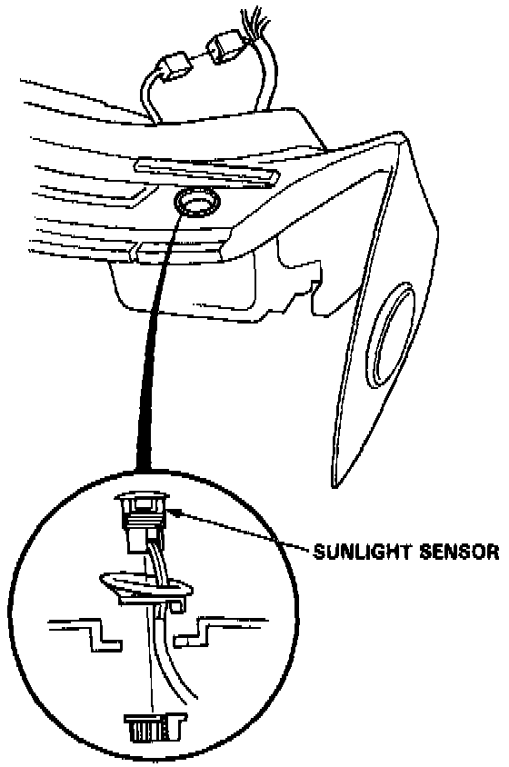

Solar Sensor: Service and Repair
Sunlight Sensor ReplacementRemoval:
1. Remove the dashboard. Service and Repair

2. Unscrew the sunlight sensor from the dashboard and disconnect the wire harness.
NOTE: Be careful not to damage the dashboard.
Installation:
Install the Sunlight Sensor in the reverse order of removal.